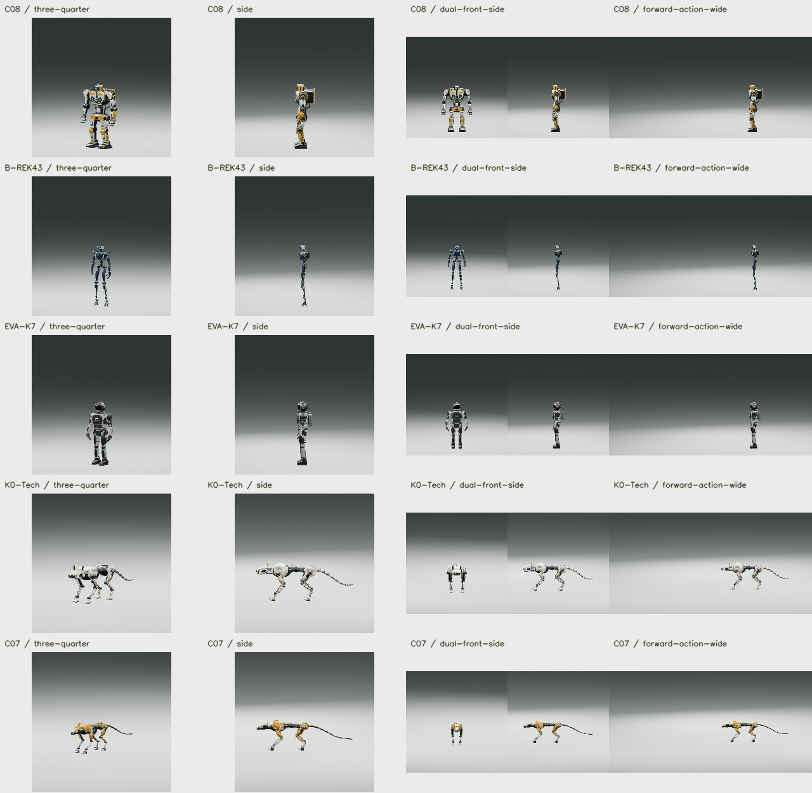

H3 reference and recovered motion comparisons
Loading experiment videos…
Loading experiment manifest.
A completed job does not establish accurate motion, natural contact or balance. Source videos and recovered results are identified separately.
Linked playback compares elapsed seconds. Cameras, source frame rates and action phases may differ.
Review the stated test and supplied artifacts. Notes and scores save automatically in this browser. Export all reviews backs up feedback across the lab.
Reference = context video. Control = known rig and rendered motion. Recovery = estimated motion. Ablation = a stated processing change. Complete means computed, rather than visually accepted.
Space: play/pause · ← / →: previous/next · Expand a card for a larger view.
Approved generated robot previews are public. Personal source videos and training environments remain private.
Read the Dev Log20 starting frames for C08, B-REK43, EVA-K7, K0-Tech and C07, with companion animation prompts, saved scenes and cameras.
Download the reference pack · Browse images and prompts
